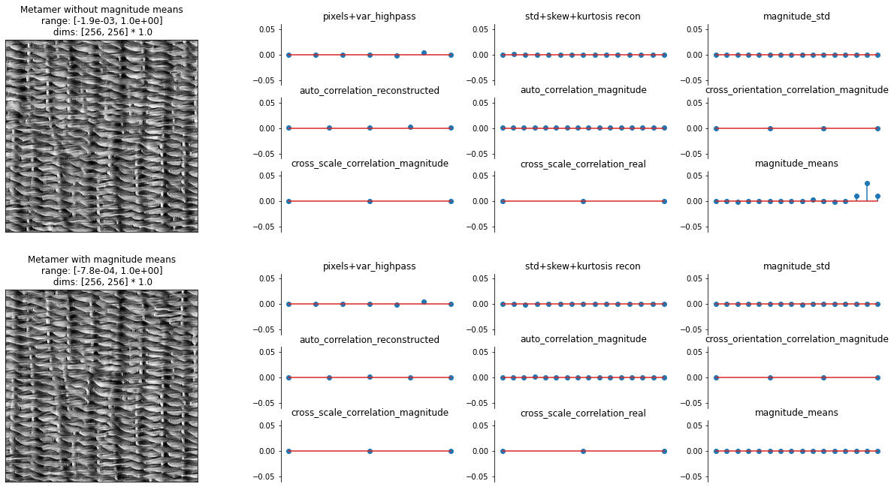

Download
Download this notebook: ps_matlab_differences.ipynb!
Notable differences between Matlab and Plenoptic Implementations
Plenoptic’s implementation of the Portilla-Simoncelli texture model is based off of the original matlab implementation. However, several changes have been made for the sake of: efficiency, compatibility with pytorch’s gradient-based methods, and simplicity. They are described in this notebook.
from collections import OrderedDict
import einops
import matplotlib.pyplot as plt
import torch
import plenoptic as po
%load_ext autoreload
%autoreload 2
# We need to download some additional images for this notebook. In order to do so,
# we use an optional dependency, pooch. If the following raises an ImportError or
# ModuleNotFoundError
# then install pooch in your plenoptic environment and restart your kernel.
from plenoptic.data.fetch import fetch_data
IMG_PATH = fetch_data("portilla_simoncelli_images.tar.gz")
CACHE_DIR = fetch_data("ps_regression.tar.gz")
# use GPU if available
DEVICE = torch.device("cuda" if torch.cuda.is_available() else "cpu")
# so that relative sizes of axes created by po.imshow and others look right
plt.rcParams["figure.dpi"] = 72
# set seed for reproducibility
po.tools.set_seed(1)
Attention
As with the other Portilla-Simoncelli notebooks, we have cached the results of synthesis online and only download them for investigation in this notebook.
Additionally, while you can normally call synthesize again to pick up where we left out, the cached version of the results discarded the optimizer’s state dict (to reduce the size on disk). Thus, calling met.synthesize(100) with one of our cached and loaded metamer objects will not give the same result as calling met.synthesize(200) with a new metamer object initialized as shown in this notebook.
Optimization. The matlab implementation of texture synthesis is designed specifically for the texture model. Gradient descent is performed on subsets of the texture statistics in a particular sequence (coarse-to-fine, etc.). The plenoptic implementation relies on the auto-differentiation and optimization tools available in pytorch. We only define the forward model and then allow pytorch to handle the optimization.
Why does this matter? We have qualitatively reproduced the results but cannot guarantee exact reproducibility. This means that, in general, metamers synthesized by the two versions will differ, though we believe that the metamers synthesized by plenoptic are better (see Portilla-Simoncelli optimization details for more discussion).
In particular, in order for synthesis to find good results, we use a custom loss function that reweights the model’s output. This is described in more detail in the Portilla-Simoncelli optimization details notebook, but in short: we upweight the variance of the highpass residuals (which are matched very quickly with very high precision by the matlab algorithm) and remove the pixel minimum and maximum from the gradient computation (the min and max have very strange gradients and are better captured through the range penalty that is built into the
Metamerclass).Lack of redundant statistics. As described in the next section, we output a different number of statistics than the Matlab implementation. The number of statistics returned in
plenopticmatches the number of statistics reported in the paper, unlike the Matlab implementation. That is because the Matlab implementation included many redundant statistics, which were either exactly redundant (e.g., symmetric values in an auto-correlation matrix), placeholders (e.g., some 0s to make the shapes of the output work out), or not mentioned in the paper. The implementation included inplenopticreturns only the necessary statistics. See the next section for more details.True correlations. In the Matlab implementation of Portilla Simoncelli statistics, the auto-correlation, cross-scale and cross-orientation statistics are based on co-variance matrices. When using
torchto perform optimization, this makes convergence more difficult. We thus normalize each of these matrices, dividing the auto-correlation matrices by their center values (the variance) and the cross-correlation matrices by the square root of the product of the appropriate variances (so that we match numpy.corrcoef). This means that the center of the auto-correlations and the diagonals ofcross_orientation_correlation_magnitudeare always 1 and are thus excluded from the representation, as discussed above. We have thus added two new statistics,std_reconstructedandmagnitude_std(the standard deviation of the reconstructed lowpass images and the standard deviation of the magnitudes of each steerable pyramid band), to compensate (see Note at end of cell). Note that the cross-scale correlations have no redundancies and do not have 1 along the diagonal. For thecross_orientation_correlation_magnitude, the value at \(A_{i,j}\) is the correlation between the magnitudes at orientation \(i\) and orientation \(j\) at the same scale, so that \(A_{i,i}\) is the correlation of a magnitude band with itself, i.e., \(1\). However, forcross_scale_correlation_magnitude, the value at \(A_{i,j}\) is the correlation between the magnitudes at orientation \(i\) and orientation \(j\) at two adjacent scales, and thus \(A_{i,i}\) is not the correlation of a band with itself; it is thus informative.
Note: We use standard deviations, instead of variances, because the value of the standard deviations lie within approximately the same range as the other values in the model’s representation, which makes optimization work better.
Redundant statistics
The original Portilla-Simoncelli paper presents formulas to obtain the number of statistics in each class from the model parameters n_scales , n_orientations and spatial_corr_width (labeled in the original paper \(N\), \(K\), and \(M\) respectively). The formulas indicate the following statistics for each class:
Marginal statistics: \(2(N+1)\) skewness and kurtosis of lowpass images, \(1\) high-pass variance, \(6\) pixel statistics.
Raw coefficient correlation: \((N+1)\frac{M^2+1}{2}\) statistics (\(\frac{M^2+1}{2}\) auto-correlations for each scale including lowpass)
Coefficient magnitude statistics: \(NK\frac{M^2+1}{2}\) autocorrelation statistics, \(N\frac{K(K-1)}{2}\) cross-orientation correlations at same scale, \(K^2(N-1)\) cross-scale correlations.
Cross-scale phase statistics: \(2K^2(N-1)\) statistics
In particular, the paper reads “For our texture examples, we have made choices of N = 4, K = 4 and M = 7, resulting in a total of 710 parameters”. However, the output of the Portilla-Simoncelli code in Matlab contains 1784 elements for these values of \(N\), \(K\) and \(M\). The discrepancy is because the Matlab output includes redundant statistics, placeholder values, and statistics not used during synthesis. The plenoptic output on the other hand returns only the essential statistics, and its output is in agreement with the papers formulas.
The redundant statistics that are removed by the plenoptic package but that are present in the Matlab code are as follows:
Auto-correlation reconstructed: An auto-covariance matrix \(A\) encodes the covariance of the elements in a signal and their neighbors. Indexing the central auto-covariance element as \(A_{0,0}\), element \(A_{i,j}\) contains the covariance of the signal with it’s neighbor at a displacement \(i,j\). Because auto-correlation matrices are even functions, they have a symmetry where \(A_{i,j}=A_{-i,-j}\) which means that every element except the central one (\(A_{0,0}\), the variance) is duplicated (see Note at end of cell). Thus, in an autocorrelation matrix of size \(M \times M\), there are \(\frac{M^2+1}{2}\) non-redundant elements (see this ratio appear in the auto-correlation statistics formulas above). The Matlab code returns the full auto-covariance matrices, that is, \(M^2\) instead of \(\frac{M^2+1}{2}\) elements for each covariance matrix.
Auto-correlation magnitude: Same symmetry and redundancies as 1).
Cross-orientation magnitude correlation: Covariance matrices \(C\) (size \(K \times K\)) have symmetry \(C_{i,j} = C_{j,i}\) (each off-diagonal element is duplicated, i.e., they’re symmetric). Thus, a \(K \times K\) covariance matrix has \(\frac{K(K+1)}{2}\) non-redundant elements. However, the diagonal elements of the cross-orientation correlations are variances, which are already contained in the central elements of the auto-correlation magnitude matrices. Thus, these covariances only hold \(\frac{K(K-1)}{2}\) non-redundant elements (see this term in the formulas above). The Matlab code returns the full covariances (with \(K^2\) elements) instead of the non-redundant ones. Also, the Matlab code returns an extra covariance matrix full of 0’s not mentioned in the paper (\((N+1)\) matrices instead of \((N)\)).
Cross-scale real correlation (phase statistics): Phase statistics contain the correlations between the \(K\) real orientations at a scale with the \(2K\) real and imaginary phase-doubled orientations at the following scale, making a total of \(K \times 2K=2K^2\) statistics (see this term in the formulas above). However, the Matlab output has matrices of size \(2K \times 2K\), where half of the matrices are filled with 0’s. Also, the paper counts the \((N-1)\) pairs of adjacent scales, but the Matlab output includes \(N\) matrices. The
plenopticoutput removes the 0’s and the extra matrix.Statistics not in paper: The Matlab code outputs the mean magnitude of each band and cross-orientation real correlations, but these are not enumerated in the paper. These statistics are removed in
plenoptic. See the next section for some more detail about the magnitude means.
Note: This can be understood by thinking of \(A_{i,0}\), the autocorrelation of every pixel and the pixel \(i\) to their right. Computing this auto-covariance involves adding together all the products \(I_{x,y}*I_{x+i,y}\) for every x and y in the image. But this is equivalent to computing \(A_{-i,0}\), because every pair of two neighbors \(i\) to the right \(I_{x,y}*I_{x+i,y}\) is also a pair of neighbors \(i\) to the left, \(I_{x+i,y}*I_{(x+i)-i,y}=I_{x+i,y}*I_{x,y}\). So, any opposite displacements around the central element in the auto-covariance matrix will have the same value.
As shown below, the output of plenoptic matches the number of statistics indicated in the paper:
img = po.tools.load_images(IMG_PATH / "fig4a.jpg")
img = img.to(DEVICE).to(torch.float64)
# Initialize the minimal model. Use same params as paper
model = po.simul.PortillaSimoncelli(
img.shape[-2:], n_scales=4, n_orientations=4, spatial_corr_width=7
).to(DEVICE)
stats = model(img)
print(f"Stats for N=4, K=4, M=7: {stats[0].shape[1]} statistics")
Stats for N=4, K=4, M=7: 710 statistics
plenoptic allows to convert the tensor of statistics into a dictionary containing matrices, similar to the Matlab output. In this dictionary, the redundant statistics are indicated with NaNs. We print one of the auto-correlation matrices showing the redundant elements it contains:
stats_dict = model.convert_to_dict(stats)
s = 1
o = 2
print(stats_dict["auto_correlation_magnitude"][0, 0, :, :, s, o])
tensor([[ 0.0077, nan, nan, nan, nan, nan, nan],
[ 0.0800, 0.1434, nan, nan, nan, nan, nan],
[ 0.0442, 0.3150, 0.6220, nan, nan, nan, nan],
[-0.0039, 0.0177, 0.5022, nan, nan, nan, nan],
[ 0.0150, 0.0171, -0.0338, 0.2946, nan, nan, nan],
[-0.0055, 0.0870, 0.2252, 0.0671, 0.0134, nan, nan],
[-0.0460, -0.0640, 0.1255, 0.3936, 0.1982, -0.0199, nan]],
device='cuda:0', dtype=torch.float64)
We see in the output above that both the upper triangular part of the matrix, and the diagonal elements from the center onwards are redundant, as indicated in the text above. Note that although the central element is not redundant in auto-covariance matrices, when the covariances are converted to correlations, the central element is 1, and so uninformative (see previous section for more information).
We can count how many statistics are in this particular class:
acm_not_redundant = torch.sum(~torch.isnan(stats_dict["auto_correlation_magnitude"]))
print(f"Non-redundant elements in acm: {acm_not_redundant}")
Non-redundant elements in acm: 384
The number of non redundant elements is 16 elements short of the \(NK\frac{M^2+1}{2} = 4\cdot 4 \cdot \frac{7^2+1}{2}=400\) statistics indicated by the formula. This is because plenoptic removes the central elements of these matrices and holds them in stats_dict['magnitude_std']:
print(f"Number magnitude band variances: {stats_dict['magnitude_std'].numel()}")
Number magnitude band variances: 16
Next, lets see whether the number of statistics in each class match what is in the original paper:
Marginal statistics: Total of
17statisticskurtosis + skewness:
2*(N+1) = 2*(4+1) = 10variance of high pass band:
1pixel statistics:
6
Raw coefficient correlation: Total of
125statisticsCentral samples of auto-correlation reconstructed:
(N+1)*(M^2+1)/2 = (4+1)*(7^2+1)/2 = 125
Coefficient magnitude statistics: Total of
472statisticsCentral samples of auto-correlation of magnitude of each subband
N*K*(M^2+1)/2 = 4*4*(7^2+1)/2 = 400Cross-correlation of orientations in same scale:
N*K*(K-1)/2 = 4*4*(4-1)/2 = 24Cross-correlation of magnitudes across scale:
K^2*(N-1) = 4^2*(4-1) = 48
Cross-scale phase statistics: Total
96statisticsCross-correlation of real coeffs with both coeffs at broader scale:
2*K^2*(N-1) = 2*4^2*(4-1) = 96
# Sum marginal statistics
marginal_stats_num = (
torch.sum(~torch.isnan(stats_dict["kurtosis_reconstructed"]))
+ torch.sum(~torch.isnan(stats_dict["skew_reconstructed"]))
+ torch.sum(~torch.isnan(stats_dict["var_highpass_residual"]))
+ torch.sum(~torch.isnan(stats_dict["pixel_statistics"]))
)
print(f"Marginal statistics: {marginal_stats_num} parameters, compared to 17 in paper")
# Sum raw coefficient correlations
real_coefficient_corr_num = torch.sum(
~torch.isnan(stats_dict["auto_correlation_reconstructed"])
)
real_variances = torch.sum(~torch.isnan(stats_dict["std_reconstructed"]))
print(
f"Raw coefficient correlation: {real_coefficient_corr_num + real_variances} "
f"parameters, compared to 125 in the paper"
)
# Sum coefficient magnitude statistics
coeff_magnitude_stats_num = (
torch.sum(~torch.isnan(stats_dict["auto_correlation_magnitude"]))
+ torch.sum(~torch.isnan(stats_dict["cross_scale_correlation_magnitude"]))
+ torch.sum(~torch.isnan(stats_dict["cross_orientation_correlation_magnitude"]))
)
coeff_magnitude_variances = torch.sum(~torch.isnan(stats_dict["magnitude_std"]))
print(
"Coefficient magnitude statistics: "
f"{coeff_magnitude_stats_num + coeff_magnitude_variances} "
"parameters, compared to 472 in paper"
)
# Sum cross-scale phase statistics
phase_statistics_num = torch.sum(
~torch.isnan(stats_dict["cross_scale_correlation_real"])
)
print(f"Phase statistics: {phase_statistics_num} parameters, compared to 96 in paper")
Marginal statistics: 17 parameters, compared to 17 in paper
Raw coefficient correlation: 125 parameters, compared to 125 in the paper
Coefficient magnitude statistics: 472 parameters, compared to 472 in paper
Phase statistics: 96 parameters, compared to 96 in paper
Magnitude means
The mean of each magnitude band are slightly different from the redundant statistics discussed in the previous section. Each of those statistics are exactly redundant, e.g., the center value of an autocorrelation matrix will always be 1. They thus cannot include any additional information. However, the magnitude means are only approximately redundant and thus could improve the texture representation. The authors excluded these values because they did not seem to be necessary: the magnitude means are constrained by the other statistics (though not perfectly), and thus including them does not improve the visual quality of the synthesized textures.
To demonstrate this, we will create a modified version of the PortillaSimoncelli class which includes the magnitude means to demonstrate:
Even without explicitly including them in the texture representation, they are still approximately matched between the original and synthesized texture images.
Including them in the representation does not significantly change the quality of the synthesized texture.
First, let’s create the modified model:
class PortillaSimoncelliMagMeans(po.simul.PortillaSimoncelli):
r"""Include the magnitude means in the PS texture representation.
Parameters
----------
im_shape: int
the size of the images being processed by the model
"""
def __init__(
self,
im_shape,
):
super().__init__(im_shape, n_scales=4, n_orientations=4, spatial_corr_width=7)
def forward(self, image, scales=None):
r"""Average Texture Statistics representations of two image
Parameters
----------
image : torch.Tensor
A 4d tensor (batch, channel, height, width) containing the image(s) to
analyze.
scales : list, optional
Which scales to include in the returned representation. If an empty
list (the default), we include all scales. Otherwise, can contain
subset of values present in this model's scales attribute.
Returns
-------
representation_tensor: torch.Tensor
3d tensor of shape (batch, channel, stats) containing the measured
texture statistics.
"""
stats = super().forward(image, scales=scales)
# this helper function returns a list of tensors containing the steerable
# pyramid coefficients at each scale
pyr_coeffs = self._compute_pyr_coeffs(image)[1]
# only compute the magnitudes for the desired scales
magnitude_pyr_coeffs = [
coeff.abs()
for i, coeff in enumerate(pyr_coeffs)
if scales is None or i in scales
]
magnitude_means = [mag.mean((-2, -1)) for mag in magnitude_pyr_coeffs]
return einops.pack([stats, *magnitude_means], "b c *")[0]
# overwriting these following two methods allows us to use the plot_representation
# method with the modified model, making examining it easier.
def convert_to_dict(self, representation_tensor: torch.Tensor) -> OrderedDict:
"""Convert tensor of stats to dictionary."""
n_mag_means = self.n_scales * self.n_orientations
rep = super().convert_to_dict(representation_tensor[..., :-n_mag_means])
mag_means = representation_tensor[..., -n_mag_means:]
rep["magnitude_means"] = einops.rearrange(
mag_means,
"b c (s o) -> b c s o",
s=self.n_scales,
o=self.n_orientations,
)
return rep
# overwriting this method is necessary for the loss factory to work
def convert_to_tensor(self, representation_dict: OrderedDict) -> torch.Tensor:
"""Convert dictionary of statistics to a tensor."""
rep = super().convert_to_tensor(representation_dict)
return torch.cat(
[rep, representation_dict["magnitude_means"].flatten(-2, -1)], -1
)
def _representation_for_plotting(self, rep: OrderedDict) -> OrderedDict:
r"""Convert the data into a dictionary representation that is more convenient
for plotting.
Intended as a helper function for plot_representation.
"""
mag_means = rep.pop("magnitude_means")
data = super()._representation_for_plotting(rep)
data["magnitude_means"] = mag_means.flatten()
return data
Now, let’s initialize our models and images for synthesis:
img = po.tools.load_images(IMG_PATH / "fig4a.jpg").to(DEVICE).to(torch.float64)
model = po.simul.PortillaSimoncelli(img.shape[-2:], spatial_corr_width=7).to(DEVICE)
loss = po.tools.optim.portilla_simoncelli_loss_factory(model, img)
model_mag_means = PortillaSimoncelliMagMeans(img.shape[-2:]).to(DEVICE)
loss_mag_means = po.tools.optim.portilla_simoncelli_loss_factory(model_mag_means, img)
And run the synthesis with the regular model, which does not include the mean of the steerable pyramid magnitudes, and then the augmented model, which does.
# Set the RNG seed to make the two synthesis procedures as similar as possible.
po.tools.set_seed(100)
met = po.synth.Metamer(
img,
model,
loss_function=loss,
)
met.load(CACHE_DIR / "ps_mag_means-False.pt", map_location=DEVICE)
po.tools.set_seed(100)
met_mag_means = po.synth.Metamer(
img,
model_mag_means,
loss_function=loss_mag_means,
)
met_mag_means.load(CACHE_DIR / "ps_mag_means-True.pt", map_location=DEVICE)
/home/agent/workspace/neurorse_plenoptic_PR-381@3/lib/python3.11/site-packages/plenoptic/synthesize/synthesis.py:390: UserWarning: You will need to call setup() to instantiate optimizer
warnings.warn(
How to run this synthesis manually
opt_kwargs = {
"max_iter": 10,
"max_eval": 10,
"history_size": 100,
"line_search_fn": "strong_wolfe",
"lr": 1,
}
met.setup(optimizer=torch.optim.LBFGS, optimizer_kwargs=opt_kwargs)
met.synthesize(max_iter=100)
Call the setup and synthesize methods of met_mag_means with the same arguments.
Now let’s examine the outputs. In the following plot, we display the synthesized metamer and the representation error for the metamer synthesized with and without explicitly constraining the magnitude means.
The two synthesized metamers appear almost identical, so including the magnitude means does not substantially change the resulting metamer at all, let alone improve its visual quality.
The representation errors are (as we’d expect) also very similar. Let’s focus on the plot in the bottom right, labeled “magnitude_means”. Each stem shows the mean of one of the magnitude bands, with the scales increasing from left to right. Looking at the representation error for the first image, we can see that, even without explicitly including the means, the error in this statistic is on the same magnitude as the other statistics, showing that it is being implicitly constrained. By comparing to the error for the second image, we can see that the error in the magnitude means does decrease, most notably in the coarsest scales.
fig, axes = plt.subplots(2, 2, figsize=(21, 11), gridspec_kw={"width_ratios": [1, 3.1]})
for ax, im, info in zip(
axes[:, 0], [met.metamer, met_mag_means.metamer], ["without", "with"]
):
po.imshow(im, ax=ax, title=f"Metamer {info} magnitude means")
ax.xaxis.set_visible(False)
ax.yaxis.set_visible(False)
model_mag_means.plot_representation(
model_mag_means(met.metamer) - model_mag_means(img),
ylim=(-0.06, 0.06),
ax=axes[0, 1],
)
model_mag_means.plot_representation(
model_mag_means(met_mag_means.metamer) - model_mag_means(img),
ylim=(-0.06, 0.06),
ax=axes[1, 1],
);

Thus, we can feel fairly confident in excluding these magnitude means from the model. Note this follows the same logic as the Understanding Portilla-Simoncelli model statistics notebook, when we tried removing different statistics to see their effect; here, we tried adding a statistic to determine its effect. Feel free to try using other target images or adding other statistics!